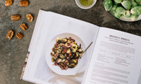

Colecciones

Mujer
Fondo especializado que recoge y difunde todo tipo de información y documentación sobre diferentes ámbitos relacionados con la mujer.

Cocina
Fondo especializado en cocina según alimentos, cocina de autor, cocina vegetariana y recetarios de nuestra tierra y del mundo, entre otras cosas.Ciencia
Fondo especializado en libros y publicaciones científicas, tanto de la historia de la ciencia com de los avances actuales.
Literatura contemporánea
Fondo centrado en la literatura contemporánea de todos los países, especialmente literatura norteamericana.